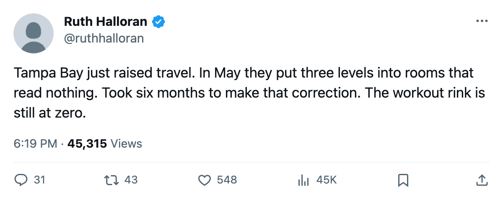
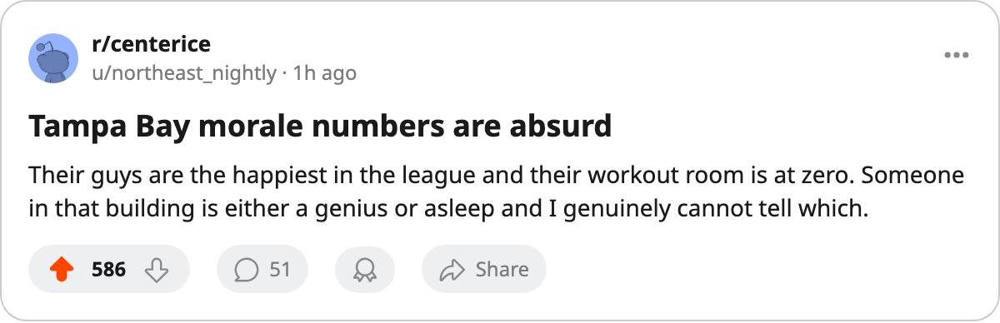

The Upgrade Report: Tampa Bay raised travel this fortnight, and the room it chose moves
Four levels went to dead rooms in May. This time, one level went somewhere that works. The workout rink, the biggest lever left, stays at zero.
 Ruth HalloranBusiness of hockey · The Building
Ruth HalloranBusiness of hockey · The Building
The piece
 Tampa Bay Lightning raised its travel room 1 level between October 18 and October 20, the league's only recorded upgrade in the 2-day window. The modifier shifts from −6 to −4, and the club's live sum improves by 2 points to −11.
Tampa Bay Lightning raised its travel room 1 level between October 18 and October 20, the league's only recorded upgrade in the 2-day window. The modifier shifts from −6 to −4, and the club's live sum improves by 2 points to −11.
This is the first room Tampa Bay has raised since the May freeze. That upgrade wave added 4 levels across 3 tracks: equipment +1, scouting +2, locker_room +1. Only the equipment level moved anything in this build. The other 3 levels went to rooms that read nothing.
What moved this time, and what did not
| date window | track | direction | does it move here |
|---|---|---|---|
| 2005-02-21 to 02-23 | practice | +1 | yes |
| 2005-05-29 to 05-31 | equipment | +1 | yes |
| 2005-05-29 to 05-31 | scouting | +2 | no |
| 2005-05-29 to 05-31 | locker_room | +1 | no |
| 2005-10-18 to 10-20 | travel | +1 | yes |
Tampa Bay has now raised 6 levels since December. Three of those levels went to rooms the tuning file names but this build ignores. Three went to live tracks. The latest is the first one since May.
Four clubs carry the same live sum. Their men do not feel the same.
Four clubs sit at a live sum of −11: Tampa Bay Lightning,  Carolina Hurricanes,
Carolina Hurricanes,  Philadelphia Flyers and
Philadelphia Flyers and  San Jose Sharks. The locker room is the track the tuning file says moves morale. In this build, it moves nothing. The numbers follow the file's claim anyway.
San Jose Sharks. The locker room is the track the tuning file says moves morale. In this build, it moves nothing. The numbers follow the file's claim anyway.
| club | live sum | locker room | morale avg | locker modifier |
|---|---|---|---|---|
| Tampa Bay Lightning | −11 | 4 (par) | 98.4 | +0 |
| San Jose Sharks | −11 | 1 | 92.2 | −8 |
| Philadelphia Flyers | −11 | 1 | 92.3 | −8 |
| Carolina Hurricanes | −11 | 0 (floor) | 90.8 | −10 |
Tampa Bay Lightning runs a par locker room and its men sit 3rd on the Bureau's morale scale at 98.4. Carolina Hurricanes runs the floor and sits 28th at 90.8. The ordering above is what the file says to expect. The room that should produce the gap reads nothing in this build, so no one in the building can claim credit for it.
The workout rink stays at the floor
Tampa Bay Lightning's workout room is at level 0. The modifier is −5, the worst available. Moving to par would add 5 points to the live sum, the single largest gain available on any track in this league. No other live track offers more than 4 at TB's current level.
Five other clubs also run a Level 0 workout:  Boston Bruins,
Boston Bruins,  Colorado Avalanche,
Colorado Avalanche,  Florida Panthers,
Florida Panthers,  Los Angeles Kings and
Los Angeles Kings and  Vancouver Canucks. Of those six, only Boston Bruins and Vancouver Canucks have raised a live track since the record opened. Colorado Avalanche raised scouting and locker_room in May, both dead. Florida Panthers raised practice, which works. Los Angeles Kings raised locker_room, which does not. Tampa Bay Lightning raised travel, which does.
Vancouver Canucks. Of those six, only Boston Bruins and Vancouver Canucks have raised a live track since the record opened. Colorado Avalanche raised scouting and locker_room in May, both dead. Florida Panthers raised practice, which works. Los Angeles Kings raised locker_room, which does not. Tampa Bay Lightning raised travel, which does.
What the payroll buys so far
Tampa Bay Lightning spends $59.79M and holds 6 points in 3 games. That is $9.96M per point, 9th-best in the league. Revenue is $28.92M and profit $19.03M. Attendance sits at 16,398, with the ticket at $81.
The live sum of −11 is tied 4th of 30. The on-the-ice rating of −0.85 is better than most clubs carrying a similar live sum. The club's 13 goals for and 6 against in 3 games is the gap between what the rooms do and what the men do.
GM Michael Burt sits at prestige 1008, 4th in the league, up 12 since the previous edition. It is the equal-largest single jump this fortnight, matched by Colorado Avalanche's Kerry Morassutti. Neither move is explained on the record.
The workout rink, worth +5 on a live sum, is still at zero.

